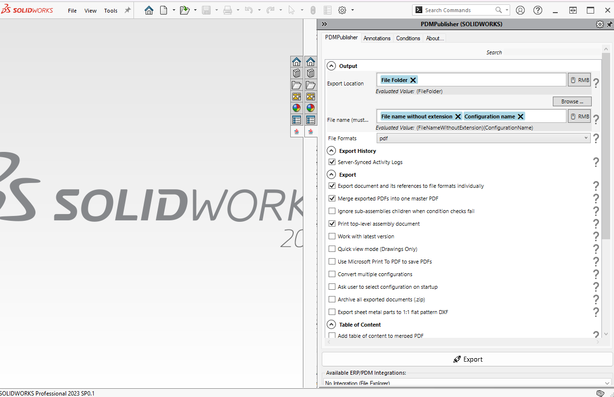

PDMPublisher for SOLIDWORKS
PDMPublisher is available as SOLIDWORKS add-in.
PDMPublisher for SOLIDWORKS 3D has the same features as PDMPublisher for SOLIDWORKS PDM Professional.
You can download PDMPublisher for SOLIDWORKS for free for SOLIDWORKS from the official product page:
https://bluebyte.biz/product/pdmpublisher-solidworks/
To directly trigger a download, use this link:
https://bluebyte.biz/wp-json/slm_custom/downloadpdmpublisher
Output
Export Location
Defines the destination folder where exported files will be saved.
Example:
File Folder
Evaluated Value: (FileFolder)
File Name
Controls the naming convention for output files.
Example:
File name without extension + Configuration name
Evaluated Value: (FileNameWithoutExtension)(ConfigurationName)
File Formats
Specifies the format(s) to export files as.
Default: pdf
Export History
Server-Synced Activity Logs
When enabled, logs export activity and syncs with the server.
Server-Synced Activity Logs
When enabled, logs export activity and syncs with the server.
Export Options
| Option | Description |
|---|---|
| Export document and its references to file formats individually | Exports each referenced part or drawing as a separate file. |
| Merge exported PDFs into one master PDF | Combines all exported PDFs into a single document. |
| Ignore sub-assemblies children when condition checks fail | Skips exporting sub-assembly children if conditional logic is not met. |
| Print top-level assembly document | Only exports the top-level assembly instead of all components. |
| Work with latest version | Always export the most recently checked-in version of files. |
| Quick view mode (Drawings Only) | Speeds up drawing exports by avoiding full model load. |
| Use Microsoft Print To PDF to save PDFs | Uses the Windows print driver instead of SOLIDWORKS built-in export. |
| Convert multiple configurations | Supports export of all configurations in the model. |
| Ask user to select configuration on startup | Prompts the user for configuration if not pre-defined. |
| Archive all exported documents (.zip) | Packages all exported files into a zip archive. |
| Export sheet metal parts to 1:1 flat pattern DXF | Automatically exports sheet metal parts as DXF in 1:1 scale. |
Table of Content
Add table of content to merged PDF
If enabled, inserts a table of content at the beginning of the merged PDF.
Table Type
Dropdown selection for TOC formatting style.
Default: TOC
Paper Size
Specifies paper size for the TOC page.
Default: A4
Watermark
Watermark
Text or evaluated variable to apply as a watermark on exported files.
Evaluated Value: As resolved at runtime.
PDF Bookmarks
PDF Bookmarks
Adds bookmarks into the PDF using the specified variable.
Default: {$Description}
Evaluated Value: ($Description)
ERP/PDM Integrations
Available ERP/PDM Integrations
Displays the integration method for output.
Default: No Integration (File Explorer)
Supported ERP/PDMs:
- SOLIDWORKS PDM Professional
- SharePoint
Export
Click the Export button to run the configured export task using all defined options.